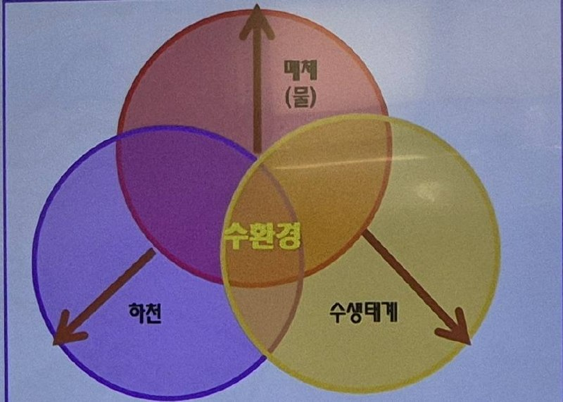
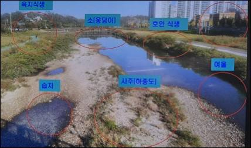

수서생물
본문 정리
20260613_수서생물(이론 및 실습)_심양재 요약
1. 수환경의 3대 요소
★ 핵심 암기 — 수환경은 다음 3대 요소로 구성
물 × 하천·강 × 수생태계 → 3대 요소의 상호작용에 의한 수환경 형성

2. 하천 생태계의 중요성에 대한 인식 변화
- 1970년대 독일: 하천 환경 기능 확보
- 1980년대 일본: 선진국 하천관리제도 받아들여 다자연하천관리
- 1990년대 후반 한국: 일본처럼 자연형하천사업 도입
*자연형 하천: 하천을 자연에 가깝게 조성하는 것
**생태하천: 생물이 서식할 수 있는 생물 중심 하천
건강한 생태하천은 생물의 다양한 서식처를 제공
★ 홍수 맥박 개념(Flood Pulse Concept)
주기적으로 발생하는 홍수가 하천과 범람원을 연결하고, 하천 생태계의 고유성과 생산성을 유지한다는 개념
- 생활주기 지원: 담수어류의 산란·부화·성장·이동에 중요한 기능을 한다.
- 먹이 공급: 상류에서 내려온 부유물질과 유기물이 생물의 먹이원이 된다.
- 정화 기능: 범람원과 습지가 영양물질과 오염물질을 붙잡아 수질 정화에 기여한다.
암기 포인트: 홍수는 단순한 재앙이 아니라, 생태계를 주기적으로 되살리는 자연의 맥박이다.
하천연속성 개념(River Continuum Concept)
1980년 Vannote 등에 의해 제시된 개념으로, 상류에서 하류까지 물의 흐름을 따라 물리적 환경과 생물군집이 연속적으로 변화한다는 관점이다.
하천은 주변 육상생태계와도 밀접하게 연결되며, 개별 지점이 아니라 유역 전체의 흐름으로 이해해야 한다.
★ 단절보·낙차공·댐은 하천의 종적 연속성을 끊는 대표적인 인위적 교란이다.
어류의 이동과 산란을 방해하고, 퇴적물·영양물질의 이동을 변화시키며, 상·하류 생태계와 서식처를 분리한다.
하천연속성에 따른 상류·중류·하류의 특징
| 구간 | 지형·물의 흐름 | 물리·화학적 환경 | 하상·생태 특징 |
|---|---|---|---|
| 상류 | 경사가 급하고 하폭이 좁아 유속이 빠르며, 여울과 폭포가 발달한다. | 물이 대체로 차고 맑으며 용존산소가 풍부하다. 주변 숲의 그늘로 햇빛 유입은 비교적 적다. | 큰 바위·돌·자갈이 많다. 낙엽 등 외부 유기물의 영향을 크게 받으며, 빠른 물살과 낮은 수온에 적응한 수서곤충과 어류가 산다. |
| 중류 | 경사가 완만해지고 하폭이 넓어진다. 여울과 소가 반복되며 흐름이 다양하다. | 햇빛이 물속에 잘 들어와 부착조류와 수생식물의 광합성이 활발하다. 수온과 용존산소는 상류와 하류의 중간 성격을 보인다. | 자갈·모래가 섞이고 서식처가 다양하다. 먹이와 공간이 풍부해 어류와 저서성 대형무척추동물의 종류가 다양해진다. |
| 하류 | 경사가 매우 완만하고 하폭과 수심·유량이 커진다. 흐름은 잔잔해 보이는 구간이 많고 퇴적 작용이 활발하다. | 수온이 비교적 높고 물이 탁해지기 쉽다. 미세 유기물과 영양염류가 모이며, 용존산소는 상류보다 낮아질 수 있다. | 모래·실트·진흙 같은 고운 입자가 많다. 부유성 유기물·플랑크톤을 이용하는 생물과 느린 물에 적응한 어류·저서생물이 주로 나타난다. |
★핵심 흐름: 상류 → 하류로 갈수록 경사·하상 입자 크기는 대체로 감소하고, 하폭·수심·유량·수온·미세 퇴적물은 대체로 증가한다. 용존산소는 낮아지는 경향이 있다.
※ 실제 모습은 계절·강수량·보와 댐·하천 정비·지류 유입 등 지역 조건에 따라 달라질 수 있다.
하천의 차수(Stream Order)
★ 하천망의 가지가 합쳐지는 단계 — 스트랄러(Strahler) 방식
하천의 차수란 하천망에서 지류가 합류하는 관계를 숫자로 나타낸 것이다. 발원지의 가장 작은 물길에서 시작하여, 같은 차수의 하천끼리 합류할 때 다음 차수로 올라간다.
예: 산비탈 샘·계곡에서 시작한 실개천
예: 1차 + 1차 = 2차
예: 2차 + 2차 = 3차
암기 공식: 1 + 1 = 2차 · 2 + 2 = 3차 · 1 + 2 = 2차 유지
3. 삼천의 하상구조

| 명칭 | 설명 |
|---|---|
| 여울 | 수심이 얕고 물이 빠르게 흐르는 곳. 물이 돌·자갈에 부딪혀 공기와 섞이므로 용존산소량이 많고, 산소를 많이 필요로 하는 수서곤충과 어류의 서식처가 된다. |
| 습지 | 하천의 형태와 사주 등으로 인해 물이 정체되어 고여 있거나 매우 약하게 흐르는 지역. 습지식물에 의해 수질정화가 활발하고 양서류나 파충류 등의 서식처가 된다. |
| 사주 (하중도·모래톱) |
유속이 느려지는 곳에 모래·자갈이 퇴적되어 형성된다. 물의 흐름을 다양하게 만들고 새·수서곤충 등의 서식처가 된다. 홍수 때 공극에 물을 머금고 갈수기에는 내보내 홍수 완화·가뭄 대비 기능을 한다. |
| 소(웅덩이) | 수심이 깊고 물이 느리게 흐르는 곳. 유기물과 고운 퇴적물이 쌓이기 쉬우며, 큰 어류의 휴식·은신처이자 갈수기의 중요한 피난처가 된다. |
핵심 대비: 여울 = 얕고 빠른 물·용존산소 풍부 ↔ 소 = 깊고 느린 물·퇴적과 은신처
4. 하천 육역화
→ 하천의 육지화를 말하며 물의 흐름을 방해함
→ 이럴 경우 준설 필요하기도 함
5. 녹조현상: 광합성을 하는 식물성 플랑크톤이 많아져서 발생
★시아노박테리아: 녹조를 일으키는 대표 생물군 중 하나로, 남세균이라고도 부른다. 세균이지만 엽록소를 가지고 광합성을 하며, 영양염류가 많고 수온이 높으며 물 흐름이 정체될 때 대량 증식할 수 있다.
시험핵심: 녹조는 단순히 “물이 초록색”인 현상이 아니라, 식물성 플랑크톤이나 시아노박테리아가 과도하게 늘어난 상태로 이해한다.
6. 하천 생태계 먹이 피라미드
★생존을 위한 번식 전략: 생물은 환경 속에서 살아남기 위해 자손의 수와 양육 방식이 다른 번식 전략을 가진다. 이를 대표적으로 K전략과 R전략으로 구분한다.
- K전략: 적은 수의 자손을 낳고, 부모가 오래 돌보거나 개체 하나하나의 생존 가능성을 높이는 전략이다. 안정적인 환경에서 유리하며, 개체 수는 적지만 생존율이 높다.
- R전략: 많은 수의 자손을 낳아 그중 일부가 살아남도록 하는 전략이다. 변화가 크거나 불안정한 환경에서 유리하며, 개체 수는 많지만 개체별 생존율은 낮다.
· 상위포식자: 자식▼(K-전략)
* · 하위 개체: 자식▲(R-전략) 피티자료에 반대로 적혀있어 수정
시험핵심: K전략 = 적게 낳고 생존율을 높임 / R전략 = 많이 낳고 일부가 살아남음. 하천 먹이피라미드에서는 상위 포식자일수록 K전략, 하위 생물일수록 R전략에 가깝게 이해한다.
7. 수서곤충
→ 물에서 생활하는 곤충을 총칭하는 말
· 반수서곤충: 물에서 태어나 성충이 되면 떠남(수서곤충 대부분이 속함)
· 진수서곤충: 전생을 물에서 살아감(노린재목, 딱정벌레목)
8. 어류
→ 하천 생태변화 알려주는 지표종이며 1차~최상위 포식자
→ 주요 특징
①물에서 생활 ②아가미로 호흡 ③ 지느러미 존재 ④ 체외수정으로 번식
※ 주의: 모든 어류가 부레를 가지고 있지는 않음
- 민물고기
: 강과 호수에 살며 우리나라에 212종 있음(고유종 63종)
: 환경에 따라 체형 다양
9. 전주천 주요 지표종
| 이름 | 특징 | 비고 |
|---|---|---|
| 쉬리 | 1~2급수 상류 여울부 바닥에 서식하며 수서곤충을 먹는다. | 전주천 지표종 |
| 꺽지 | 하천 상류의 자갈이 많은 곳에 서식한다. 육식성으로 작은 어류를 먹을 정도로 입이 크고, 몸은 작고 얇다. | 상위 포식성 어류 |
| 참종개 | ★학명: Iksookimia koreensis (익수키미아 코린시스). 속명 Iksookimia는 우리나라 민물고기 연구자인 김익수 교수 이름에서 유래한 것으로 기억한다. 역삼각 갈색 무늬가 있으며 미꾸라지와 비슷하게 생겼다. |
한국고유종 · 김익수 교수 관련 학명 기억 |
| 밀어 | 하천 중류 여울부부터 하류에 서식한다. 육봉화된 어류로 설명됨. | 육봉화: 바다에 살다 민물로 이동해 계속 사는 것 |
| 민물검정망둑 | 자갈과 돌이 많은 곳에서 산다. 지느러미 앞쪽의 주황색 무늬가 특징이다. | 망둑어류 |
| 동자개 | 빠가사리로 잘 알려져 있다. | 동자개류 |
| 동사리 | 얼룩무늬가 띠 모양으로 규칙적이다. 얼룩무늬가 불규칙하면 얼룩동사리로 구분한다. | 무늬 구분 포인트 |
| 피라미 | 환경 적응력이 좋고 개체 수가 많다. 단체 산란하는 것이 특징이다. | 흔한 하천 어류 |
| 참갈겨니 | 몸에 비해 눈이 크고, 물이 맑고 차가운 곳을 좋아한다. | 상류·계곡성 환경 |
| 모래무지 | 모래에 숨어 있다가 강바닥에 사는 곤충을 잡아먹는다. | 저서성 생활 |
| 돌마자 | 이름의 ‘돌’은 가짜를 의미하며, 얼굴이 납작해 물고기 같지 않아 이름이 붙었다. | 형태 기억 |
| 각시붕어·납자루류 | 산란기가 되면 암컷이 긴 산란관을 민물조개의 출수관에 넣어 조개 아가미 안에 알을 낳는다. 알과 어린 물고기는 조개 안에서 외부 포식자로부터 보호받으며 자란다. | 조개는 유생(글로키디움)을 물고기 몸에 붙여 이동·분산 서로 이익을 얻는 상리공생 |
| 버들치 | 깨끗한 계곡에서만 살아 1급수 지표종이라고 알려져 있지만, 정확히는 맑은 물보다 차가운 물을 좋아한다. | 수질 지표종 설명 주의 |
필기에서만 추가되는 내용
1. 하천 형태와 관리 방향
- 직선 수류 하천: 인공적으로 정비된 하천의 형태로 표시되어 있음.
- 사행 하천: 자연적인 하천 형태로 표시되어 있음.
- 전주천: 강의 사례로 함께 언급되어 있음.
- 인간의 간섭 최소화: 자연형 하천 또는 생태하천 관리 방향과 연결되는 필기.
2. 수서곤충의 생활사 구분
- 진수서곤충: 물장군, 물자라가 예시로 필기되어 있음.
- 반수서곤충: 잠자리, 하루살이처럼 생활사의 일부를 물속에서 보내는 곤충.
3. 민물고기와 어류 형태
- 민물고기: 일생 동안 강과 호수 등의 내륙습지에서 살아가는 동물.
- 호흡: 아가미로 호흡한다.
- 이동: 앞, 가슴, 등, 뒤, 꼬리 지느러미로 물속에서 이동한다.
- 번식: 체외수정으로 알을 낳아 번식한다.
- 우리나라 민물고기: 212여 종으로 필기되어 있으며, 한국고유종 63종과 외래종 11종 포함으로 적혀 있음.
- 외부 형태 명칭: 콧구멍, 제1등지느러미, 제2등지느러미, 꼬리지느러미, 뒷지느러미, 가슴지느러미, 배지느러미, 항문, 전장 등이 표시되어 있음.
- 체형: 방추형, 장어형, 리본형, 구형, 종편형 등이 제시되어 있음.
4. 비늘의 종류
- 방패비늘: 상어류 등의 연골어류에서 볼 수 있음.
- 굳비늘: 외층과 내층의 2층 구조가 섬유질로 연결되어 있어 매우 질김.
- 빗비늘: 빗 모양이며 유영력을 높이는 데 효율적. 농어, 숭어 등이 예시로 적혀 있음.
- 둥근비늘: 비늘 부위가 뚜렷하여 연령이나 계군 분석에 이용되기도 함. 송어, 청어, 정어리 등이 예시로 적혀 있음.
현장 적용·실습 사례
1. 하천은 행정구역이 아니라 유역 단위로 보아야 한다
하천은 하나로 이어져 있는 공간이지만 실제 관리는 행정구역에 따라 달라지는 경우가 많다. 삼천은 전주시 구간과 완주군 구간이 이어져 있으나, 원남교 부근을 기준으로 양쪽의 하천 모습이 확연히 다르다.
전주시 쪽 삼천은 비교적 자연 상태를 유지해 왔다. 좋게 말하면 자연형 관리이고, 나쁘게 말하면 크게 손대지 않고 방치한 것이다. 그 결과 상류 쪽에는 반딧불이가 많이 나타나는 등 자연성이 유지되고 있다.
반면 완주군 쪽은 같은 하천임에도 돌을 정비하고 인공적인 형태로 만든 구간이 많다. 다리 하나를 기준으로 하천 모습이 크게 달라지는 것은 행정구역별 하천 관리 방식이 다르기 때문에 나타나는 현상이다.
하지만 하천은 행정구역으로 끊어지는 공간이 아니다. 물은 상류에서 하류로 이어지고 생태계도 함께 연결된다. 그래서 하천은 전체 유역을 하나로 보고 관리해야 하며, 이를 유역관리라고 한다.
다만 실제 유역관리위원회에서는 각 지자체가 물을 어떻게 나눠 쓸 것인지, 누가 더 가져갈 것인지와 같은 이해관계로 다투는 경우가 많다. 유역관리는 하천의 연속성과 생태적 가치를 함께 보자는 취지이지만, 현실에서는 물 이용 문제로 갈등이 생기기도 한다.
2. 이수·치수 중심에서 생태하천으로의 변화
과거 하천 정비는 주로 홍수를 막기 위한 치수 중심으로 이루어졌다. 물길을 곧게 만들고 콘크리트로 제방을 쌓는 방식이었으나, 이런 방식은 하천의 자연성을 크게 떨어뜨린다.
이후 생태 개념이 들어오면서 하천 정비 방식이 달라졌다. 콘크리트를 걷어내고, 식물이 자랄 수 있는 공간을 만들고, 물길을 직선이 아니라 곡선으로 조성하는 방향으로 변화했다.
자연스러운 하천은 뱀이 움직이듯 구불구불한 사행하천의 형태를 가진다. 물이 빠르게 흐르는 곳과 느리게 흐르는 곳이 생기고, 그 과정에서 깎이는 곳과 쌓이는 곳이 만들어진다. 이로 인해 여울, 소, 모래톱, 습지 같은 다양한 하천 구조가 생긴다.
다양한 구조가 있어야 생물들이 살아갈 수 있는 서식처도 다양해진다. 물이 빠른 곳에는 돌과 자갈이 남고, 물이 느린 곳에는 모래와 유기물이 쌓인다. 환경이 다양해질수록 그 안에 사는 생물도 다양해진다.
3. 여울과 소의 역할
여울은 물길이 좁아지면서 물이 빠르게 흐르는 곳이다. 물이 돌과 자갈에 부딪히며 공기 중 산소가 물속으로 섞이고, 물속에 녹아 있는 산소량인 용존산소가 증가한다.
용존산소가 풍부한 여울은 수질이 비교적 깨끗하고, 깨끗한 물에서 사는 저서성 생물이나 우리나라 고유종 물고기들이 많이 살아가는 공간이다.
반대로 소는 물길이 넓어지면서 물이 천천히 흐르거나 거의 멈춘 것처럼 보이는 곳이다. 이곳에는 모래, 진흙, 유기물 등이 쌓이고, 오염물질도 함께 쌓일 수 있다. 그러나 여울에서 공급된 산소와 미생물의 작용으로 분해가 일어난다.
따라서 여울과 소가 반복적으로 나타나는 하천은 자연정화 능력이 높아진다. 생물들이 살아가고, 먹고 먹히며, 유기물을 분해하는 순환이 일어나기 때문이다.
4. 전주천의 자연정화 사례와 도시하천 문제
전주천에는 오염된 지천이 합류하는 구간이 있다. 예를 들어 건산천은 수질이 좋지 않은 물이 전주천으로 흘러드는 곳이다. 합류 직후에는 전주천 수질이 일시적으로 나빠질 수 있다.
하지만 전주천은 여울과 소가 잘 발달되어 있고 생물도 많이 살기 때문에 일정 구간을 지나면 다시 수질이 회복되는 모습을 보인다. 이는 하천의 자연정화 작용이 실제로 일어나고 있음을 보여준다.
도시하천에서는 초기강우 문제가 있다. 비가 조금만 와도 도로, 주차장, 지붕 등에 쌓여 있던 오염물질이 한꺼번에 하천으로 흘러든다. 이때 물고기 폐사가 발생하기도 한다.
그래서 도시에서는 콘크리트와 아스팔트 같은 불투수층을 줄이고, 빗물이 땅속으로 스며들 수 있는 투수층과 녹지 공간을 늘려야 한다.
5. 사주·하중도·모래톱의 중요성
하천에서 중요한 구조 중 하나는 사주, 하중도, 모래톱이다. 이는 하천 안에 모래나 자갈이 쌓여 육지처럼 형성된 공간이다.
사주와 하중도는 물의 흐름을 다양하게 만들고, 육지와 물속 생태계를 연결하는 역할을 한다. 수달, 고라니, 너구리 같은 동물들이 하천을 이동하거나 이용할 수 있는 중요한 공간이 되기도 한다.
사주는 단순히 물길을 막는 장애물이 아니다. 자갈과 모래 사이에는 틈이 있어 물이 스며들 수 있다. 물이 많을 때는 스펀지처럼 물을 머금어 홍수 조절에 도움을 주고, 물이 적을 때는 저장된 물이 다시 흘러나와 가뭄 완화에도 기여한다.
따라서 하천에 쌓인 모래톱을 무조건 긁어내는 것은 바람직하지 않다. 다만 도심 하천에서는 인공 구조물 때문에 물길이 막히거나 오염물이 쌓이는 구간이 생길 수 있으므로 제한적인 준설이 필요할 수 있다. 중요한 것은 구간별 특성과 생태적 기능을 조사한 뒤 유연하게 관리하는 것이다.
6. 버드나무숲과 하천 관리
전주천의 버드나무숲은 과거 사진 명소로 유명했다. 남천교 주변에서 바라보는 버드나무숲은 경관이 아름다워 많은 사진 동호인들이 찾던 장소였다. 바람에 흔들리는 버드나무와 맑은 하천이 어우러져 전주천의 대표적인 경관을 이루었다.
그러나 홍수 대비를 이유로 버드나무가 대규모로 잘려 나갔다. 문제는 나무를 모두 제거한 것이 아니라 밑동만 남겨둔 경우가 많았다는 점이다. 이후 새 가지들이 옆으로 많이 뻗어 나왔고, 오히려 물 흐름을 방해하는 지장수목이 될 수 있는 상태가 되었다.
하천 관리는 안전도 중요하지만 생태적 가치와 경관적 가치도 함께 고려해야 한다. 버드나무숲은 단순한 나무가 아니라 전주천의 생태, 경관, 관광 가치와 연결되어 있기 때문이다.
7. 건강한 생태하천의 조건
건강한 생태하천은 생물들이 살아갈 수 있는 다양한 서식처가 있는 하천이다. 여울, 소, 습지, 모래톱, 호안식생, 고수부지 등이 서로 연결되어야 한다.
호안식생도 중요하다. 물과 육지가 만나는 사면에 식물이 있으면, 물속 곤충들이 그 식물을 타고 올라와 우화할 수 있다. 곤충이 많아지면 물고기가 모이고, 물고기가 있으면 새들이 날아온다. 새들은 씨앗이나 생물의 유전자를 다른 곳으로 옮기며 생태계를 확장시킨다.
결국 하천 생태계는 물속과 물가, 육지, 하늘까지 연결되어 있다. 한 부분만 따로 떼어 관리할 수 없다.
8. 먹이그물, 자연정화, 녹조와 부착조류
하천 생태계에서는 식물성 플랑크톤, 부착조류, 수서곤충, 물고기, 새 등이 서로 먹고 먹히는 관계를 형성한다. 이를 먹이그물이라고 한다.
먹이그물이 안정적으로 유지되면 자연정화 작용이 원활하게 일어난다. 생물들이 유기물을 먹고, 배설하고, 죽은 뒤 다시 분해되면서 물질이 순환한다. 그러나 먹이그물 중 하나가 무너지면 생태계 전체가 흔들릴 수 있다. 그래서 좋은 뜻의 방류 행사도 기존 생태계 균형을 깨뜨릴 수 있어 조심해야 한다.
녹조는 눈에 보이지 않을 정도로 작은 조류가 대량으로 늘어나면서 물이 녹색으로 보이는 현상이다. 녹조는 문제가 될 수 있지만 모든 녹색 조류가 나쁜 것은 아니다.
돌에 붙어 있는 녹색 부착조류는 물속 생태계의 1차 생산자 역할을 한다. 육지에서 식물이 광합성을 통해 산소와 에너지를 만드는 것처럼, 물속에서는 부착조류와 식물성 플랑크톤이 그 역할을 한다.
따라서 돌에 이끼처럼 녹색 조류가 붙어 있다고 해서 무조건 더러운 하천이라고 볼 수는 없다. 오히려 그것을 먹는 수서곤충과 물고기가 있어야 하천 생태계가 유지된다. 청계천처럼 녹조나 부착조류가 보기 싫다는 이유로 돌을 솔로 닦아내는 방식은 수서곤충과 미생물까지 제거할 수 있어 생태적으로 바람직하지 않다.
9. 수서곤충과 어류 지표종
수서곤충은 물속에서 살아가는 곤충이다. 한평생 물속에서 사는 진수서곤충과, 어린 시기에는 물속에서 살다가 성충이 되면 물 밖으로 나오는 반수서곤충이 있다.
물장군, 물자라, 게아재비 등은 진수서곤충에 가깝고, 잠자리나 하루살이 등은 반수서곤충에 해당한다. 수서곤충은 부착조류나 식물성 플랑크톤을 먹으며 개체 수를 조절하고, 물고기들의 먹이가 되어 하천 먹이그물에서 중간다리 역할을 한다.
어류는 하천 생태계를 평가할 때 중요한 지표가 된다. 수서곤충보다 크기가 크고 관찰하기 쉬우며, 하천 환경 변화에 민감하게 반응하기 때문이다. 물고기는 물속에서 살고, 아가미로 호흡하며, 지느러미를 가지고 있고, 대부분 체외수정을 한다. 다만 모든 물고기가 부레를 가진 것은 아니며 상어는 부레가 없다.
물고기의 몸 모양은 사는 환경에 따라 달라진다. 빠른 여울에 사는 물고기는 물살을 가르기 좋게 몸이 가늘고 유선형인 경우가 많다. 바닥이나 돌 틈에 사는 물고기는 몸이 납작하거나 눈이 위쪽에 있는 경우가 많다. 이처럼 물고기의 형태를 보면 그 물고기가 사는 하천 환경을 추정할 수 있다.
10. 전주천 주요 물고기와 생태계 교란종
- 쉬리: 한반도를 대표하는 민물고기 중 하나이며 몸에 무지갯빛 무늬가 있다. 여울에서 살며 물살을 타고 헤엄치는 능력이 좋고, 여울치·각시치라고도 불린다.
- 꺽지: 몸에 비해 머리와 입이 크며 다른 물고기를 잡아먹는 육식성 물고기다. 큰 바위가 있는 계류나 깨끗한 하천에서 살고, 돌 밑에 알을 붙이면 수컷이 알을 지킨다.
- 민물검정망둑: 망둑어류에 속하며 눈 아래 붉은색 줄무늬가 특징이다. 바다에 살던 생물이 민물 환경에 적응해 살아가게 된 육봉화 사례로 설명된다.
- 눈동자개: 흔히 빠가사리로 불리는 동자개류 중 하나다. 등에 날카로운 가시가 있어 손으로 잡을 때 주의해야 한다.
- 동사리: 바닥의 돌에 붙어 살며, 돌처럼 가만히 있다가 먹이가 가까이 오면 순간적으로 잡아먹는다. 동사리와 얼룩동사리는 몸의 무늬 패턴으로 구분한다.
- 피라미: 하천에서 흔히 볼 수 있는 물고기이며 적응력이 뛰어나고 개체 수가 많다. 산란기가 되면 수컷의 몸에 붉은색과 푸른색이 나타난다.
- 참갈겨니: 피라미와 비슷하지만 눈이 크고 몸의 무늬가 다르다. 차갑고 깨끗한 물을 좋아한다.
- 모래무지: 하천 바닥의 모래를 먹으며 살고, 모래 속 유기물을 걸러 먹어 하천 청소부와 같은 역할을 한다.
- 돌마자: 이름의 돌은 가짜라는 의미에 가깝고, 얼굴이 납작해 사람 얼굴처럼 보이기도 한다. 돌에 붙은 이끼나 부착조류를 긁어 먹기에 적합한 형태로 진화했다.
- ★참종개와 김익수 교수: 참종개는 전주천에서도 확인되는 우리나라 고유종이며, 학명은 Iksookimia koreensis(익수키미아 코린시스)이다. 속명 Iksookimia는 한국 민물고기 연구자인 김익수 교수 이름에서 유래한 것으로, 학명과 함께 중요 표시한다. 미꾸리와 미꾸라지는 사는 환경과 수염 길이 등으로 구분한다.
- ★각시붕어·납자루류 ↔ 민물조개: 암컷은 산란관을 조개의 출수관에 넣어 아가미 안에 산란하고, 알과 어린 물고기는 조개 안에서 보호받는다. 반대로 조개는 유생(글로키디움)을 물고기의 아가미·지느러미 등에 붙여 이동·분산시킨다. 따라서 학습상 양쪽 모두 이익을 얻는 상리공생으로 정리한다.
- 암기납자루는 조개를 산란장·보육장으로, 조개는 납자루를 유생의 이동수단으로 이용한다.
- ★돌고기류: 꺽지알 활착부근에 탁란을 한다.
- 버들치: 흔히 1급수 지표종으로 알려져 있으나, 정확히는 깨끗한 물만 좋아한다기보다 차갑고 산소가 풍부한 물을 좋아한다.
- 배스와 블루길: 대표적인 생태계 교란종이다. 특히 배스는 포식성이 강하면서 번식력도 높아 기존 물고기와 수서생물의 개체 수를 크게 줄일 수 있다.
주요 표시 요약
- → 주요 특징
- 이름 특징 사진
- 것이 특징
- · 단체 산란하는 것이 특징